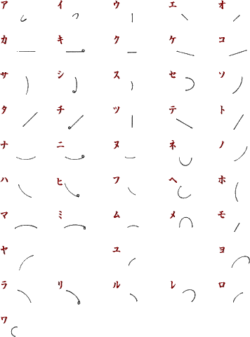
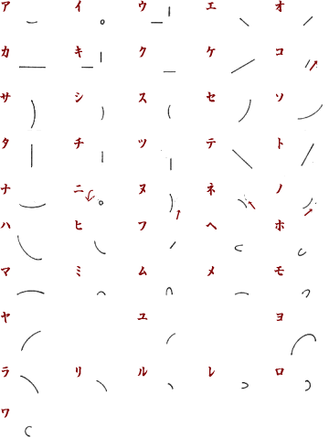
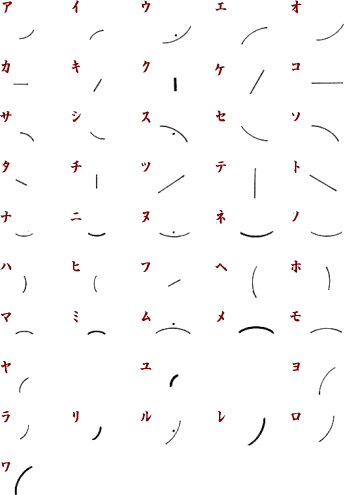
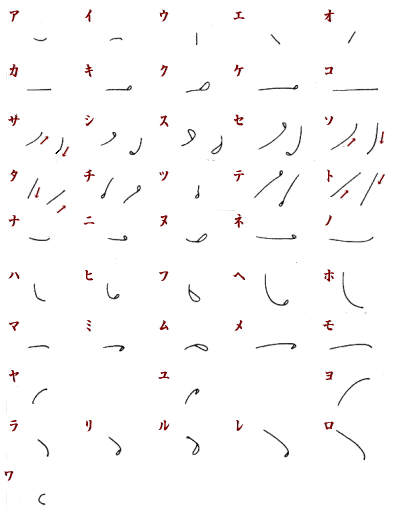
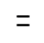
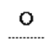

速記とは
1.あなたも速記を使っている
「実は、皆さんも速記文字をつかっているんですよ」
「使っているって、今まで速記を見たこともなかったんですよ」
「でも、漢字や仮名を使っているでしょう」
「それはそうですけど・・・・・・。」
「その『仮名』は、『漢字』を速記文字化したものなんですよ」
「本当ですか？」
仮名は、今から1,000年以上も前の平安時代にできました。それまでは日本語を書きあらわすために、中国から伝わった漢字をそのまま使っていました。しかし、複雑で難しい漢字が多かったので、それを簡単に崩して書いたり（平仮名）、一部を抜き出したり（片仮名）して簡略化するようになりました。ですから、仮名は漢字をもとにしてつくった速記文字とも言えるわけです。
例えば、平仮名の「あ」は「安」、「い」は「以」を崩して、また片仮名の「ウ」は「宇」の上部、「エ」は「江」の右部分を抜き出して、言葉の音をあらわしています。そして、この簡便な仮名よりもさらに単純な線を使ったものが「速記文字」と言えるでしょう。そこで、「速記文字」のことを第3の仮名文字「はや仮名」と名づけた人もいます。
2.ＫＹ、コンカツも速記の手法！
今、若い人たちの間では、「ＫＹ」と書いて「空気が読めない」、「コンカツ」と言って「結婚活動」の意味で使われています。「ＪＲ」や「通販」も以前から使われていますが、同じ原理ですね。このように、もとの言葉から一部分を抜き出して、短縮された略語がつくられています。
速記でも同じように、よく出てくる言葉には略語がつくられます。つくり出す材料が仮名よりさらに簡単な速記文字ですから、これまでよりもぐんと素早く書けるというわけですね。
3.1日が24時間以上に？
速記を使うと、今まで文字を書くことに費やしていた時間が5分の1にも10分の1にも減りますから、新たに自由に使える時間がふえ、1日24時間以上の価値を生み出すこともできるでしょう。
また、速記に熟達すれば、以前のように、何かを思いついても書きとめる余裕がなくて、歯ぎしりしている間に忘れ去ってしまうということもなくなります。
時間はお金で買えません。その時刻、時間はもう二度と戻らないのです。速記を使いこなすことによって、あなたにとってただ一度しかないその時、その機会を今までよりも効果的に使えるようになることでしょう。
4.速記とは？
速記とは、簡単な線や点でできた符号などを使って、人が話す言葉をすぐさま書き取る技術です。速記符号は、五十音に準拠して考案されていますが、かなり簡略化されているので、ひらがな・漢字を書くよりスピードアップが図れ、しゃべるスピードに負けない速さで文字を書くことができます。ただ、そのままでは暗号のようになっているので、それを解読し、きちんと整った文章に書き直す作業までが「速記」です。
速記には、速記符号を使う手書き速記だけでなく、パソコンや速記専用タイプライター（ステンチュラ）などの機器を使った機械速記もあります。
速記方式いろいろ
速記方式にはいろいろありますが、そもそもどうして一つに統一されていないのでしょう。
日本初の速記法である「田鎖式」は、英語の速記法を日本語に応用し、いわばローマ字書きのようにして書いていくため、日本語の一音をそのまま一画であらわすことができません。つまり画数が多くなり、どうしても時間がかかってしまいます。そこで、できるだけ画数を少なくして書く量を減らしていこうと、いろいろな人が速記法を考えたわけです。その結果、たくさんの速記方式ができあがりました。
現在では、参議院式、衆議院式、中根式、早稲田式が代表的です。
以下に、この４つの方式で書かれた五十音表を掲げます。符号は違いますが、根底の考え方はどれも同じです。
参議院式

衆議院式

中根式

早稲田式

《おもしろい単語符号》

2本の平行線→ニホン→日本
（衆議院式、早稲田式）
小さい丸→コマル→困る
（早稲田式）

上方に丸→ウエマル→上回る
（中根式）
速記の活用いろいろ
速記の技術を身につければ、日常生活でもいろいろと役に立つことが盛りだくさん。
例えば・・・・。
職場や学校で
電話応対の際のメモ書きや、新聞記者の取材活動などにも活用できます。また、学校の授業時での板書にも使えますし、速記文字を使えば、先生の話を聞き漏らすことなくすべて書き取ることも可能です。
脳内活性化
指先を動かすことと頭脳を使うことは、老化防止に最も有効なことだそうですが、速記は、その2つの部分を絶えず刺激するものなので、ボケ防止にもなり、いつまでも若さを保つことができます。実際、速記界には70代、80代でも第一線で活躍されている方が多くいらっしゃいます。
日記や手記にも
速記符号を使って日記を書けば、ほかの人に見られたときにも何が書かれているのか解読不能！どんなことでも安心して書ける、自分だけの秘密文字になります。
国語力アップ
近年、日本人の国語力の低下が嘆かれていますが、漢字・仮名の使い分け、言葉・文字・句読点のつけ方など、国語力を高めることは、小学生から社会人まで、それぞれが各分野での知識・能力をアップさせる基本です。
速記を学習するには、日本語で聞こえてくるいろいろな文章を耳で聞き取り、頭の中で意味を理解しながら速記符号を駆使して紙に書き取ります。次に、書かれた文章を読み取り、きちんとした文章に戻します。つまり、耳や目や手、頭脳をフル活用して「音声言語を文字言語に変換する作業」ですから、自然と国語力がアップするわけです。